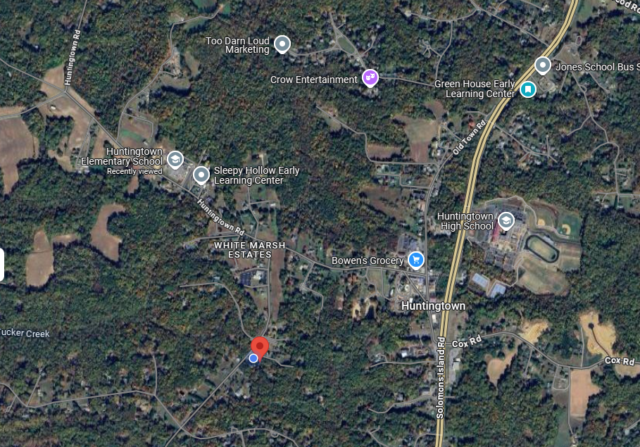

House Details
Discover over 3,000 sq ft of comfortable elegance in this beautifully maintained 6-room home featuring 4 bedrooms, plus 2 non-windowed rooms in basement good for gym/guest/office, and 3.5 baths, perfect for both living and working in style. Set on 1.6 peaceful acres and built in 2002, this home has been thoughtfully upgraded with today’s comforts in mind. Enjoy the convenience of two laundry stations, a brand-new upstairs HVAC system with UV filtration, blower, and condenser, and recent appliances offering reliability and efficiency. Step outside to your screened-in patio, ideal for relaxing or entertaining. The backyard features a brand new raised greenhouse platform and room to run and play. Vehicle enthusiasts and hobbyists will love the 2-car garage plus a massive 40x32 concrete pad, ready for your boat and RV, and prepped for a full garage build. Maintained with care through Boothe’s Home Care Comfort Club, this home offers peace of mind and long-term comfort. This is more than a house, it’s a lifestyle.
Local School Data:
| School | Ranking | Distance from House (miles) | Grades |
|---|---|---|---|
| Huntingtown Elementary | 8/10 | 1 mile | Pre-K to 5 |
| Northern Middle | 9/10 | 5 miles | 6 to 8 |
| Huntingtown High | 8/10 | 1 mile | 9 to 12 |

This neighborhood has such a warm, friendly vibe and feels like you're tucked away in the peaceful countryside, but with all the essentials just around the corner! The people here are fantastic, and there's a really chill, welcoming atmosphere. Down the road, you'll find Bones Grocery, (formerly called Bowens) a local gem that’s famous for its delicious ice cream and impressive selection of alcohol. But the real hidden treasure is their deli, where you can enjoy what I personally believe is the best chili in Maryland and some top-notch steaks and sandwiches. The elementary school is just a mile away, with an amazing staff that truly cares about your child's growth and well-being. If you keep driving straight past the school for about three miles, you’ll reach the river, complete with a fishing pier and scenic hiking trails! Also within a four-mile radius, you'll find a couple of churches, several wonderful daycares (I highly recommend Greenhouse Early Learning Center — Ms. Jill is fantastic!), and you'll even pass by the high school on your way! It's truly a wonderful place to call home!